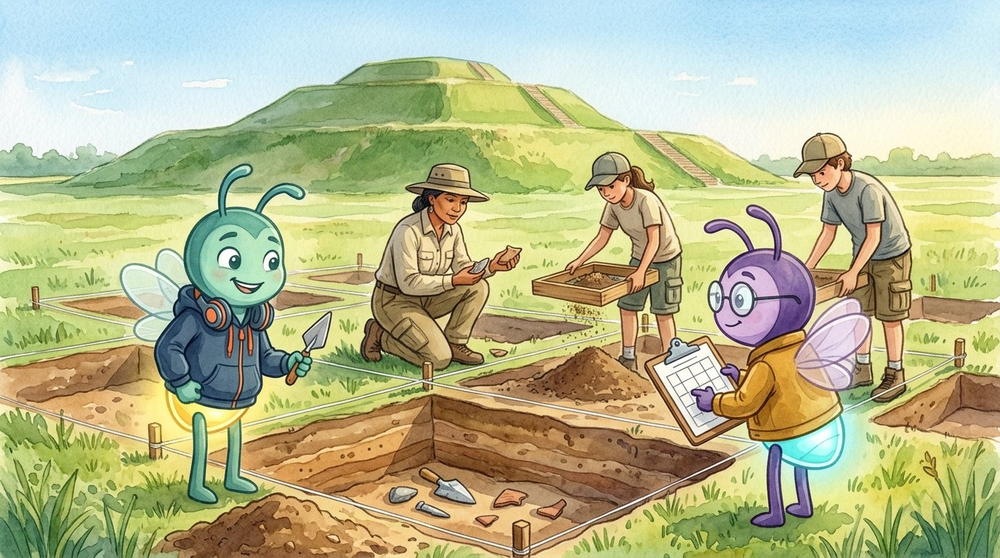

One field, many good plans
Near Monks Mound, a team of archaeologists will dig a field where Cahokia's people lived about a thousand years ago. Plan where to dig. Follow the rules of each season, and then find a second plan that is very different. There is more than one good answer!
Cerca de Monks Mound, un equipo de arqueólogos va a excavar un campo donde vivió el pueblo de Cahokia hace unos mil años. Planea dónde excavar. Cumple las reglas de cada temporada y después busca un segundo plan muy distinto. ¡Hay más de una buena respuesta!
Who is playing?¿Quién juega?
What grade are you in?¿En qué grado estás?

💡 For the grown-up
🌅 The real WoodhengeEl Woodhenge de verdad
In the early 1960s, before a highway was built near Cahokia, archaeologist Warren Wittry studied the maps of a rescue excavation and noticed that some large oval pits were arranged in arcs. He proposed that they had held posts in great circles. Those circles of red cedar posts, now called Woodhenge, were built and rebuilt larger: the first had 24 posts, and later ones added posts in groups of 12. Some posts line up with the sunrise on the equinoxes and solstices. Today a reconstructed circle stands at the site, and people gather there to watch the sun rise.
A principios de los años sesenta, antes de construir una carretera cerca de Cahokia, el arqueólogo Warren Wittry estudió los mapas de una excavación de rescate y notó que unos hoyos ovalados grandes formaban arcos. Propuso que habían sostenido postes en grandes círculos. Esos círculos de postes de cedro rojo, que hoy se llaman Woodhenge, se construyeron y se reconstruyeron cada vez más grandes: el primero tenía 24 postes y los siguientes agregaron postes de 12 en 12. Algunos postes se alinean con la salida del sol en los equinoccios y los solsticios. Hoy hay un círculo reconstruido en el sitio, y la gente se reúne allí a ver salir el sol.